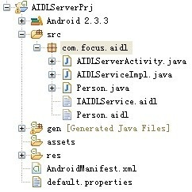

Android 跨进程通信（一）
一. 概述：
跨进程通信（AIDL），主要实现进程（应用）间数据共享功能。
二. 实现流程：
1. 服务器端实现：
（1）目录结构，如下图：

（2）实现*.aidl文件：
A. IAIDLService.aidl实现：
interface IAIDLService { String getName();
Person getPerson();
}
B. Person.aidl实现：
parcelable Person;
（3）进程间传递对象必需实现Parcelable或Serializable接口，下面是被传递的Person对象实现：
import android.os.Parcel;import android.os.Parcelable;
public class Person implements Parcelable {
private String name;
private int age;
public Person() {
}
public Person(Parcel source) {
name = source.readString();
age = source.readInt();
}
public String getName() {
return name;
}
public void setName(String name) {
this.name = name;
}
public int getAge() {
return age;
}
public void setAge(int age) {
this.age = age;
}
public int describeContents() {
return 0;
}
public void writeToParcel(Parcel dest, int flags) {
dest.writeString(name);
dest.writeInt(age);
}
public static final Parcelable.Creator<Person> CREATOR = new Creator<Person>() {
public Person[] newArray(int size) {
return new Person[size];
}
public Person createFromParcel(Parcel source) {
return new Person(source);
}
};
}
（4）实现IAIDLService.aidl文件中定义的接口，并定义Service，在Service被bind时返回此实现类：
import android.app.Service;import android.content.Intent;
import android.os.IBinder;
import android.os.RemoteException;
public class AIDLServiceImpl extends Service {
@Override
public IBinder onBind(Intent intent) {
return mBinder;
}
/**
* 在AIDL文件中定义的接口实现。
*/
private IAIDLService.Stub mBinder = new Stub() {
public String getName() throws RemoteException {
return "mayingcai";
}
public Person getPerson() throws RemoteException {
Person mPerson = new Person();
mPerson.setName("mayingcai");
mPerson.setAge(24);
return mPerson;
}
};
}
（5）在AndroidManifest.xml文件中注册Service：
<service android:name = ".AIDLServiceImpl" android:process = ":remote"><intent-filter>
<action android:name = "com.focus.aidl.IAIDLService" />
</intent-filter>
</service>